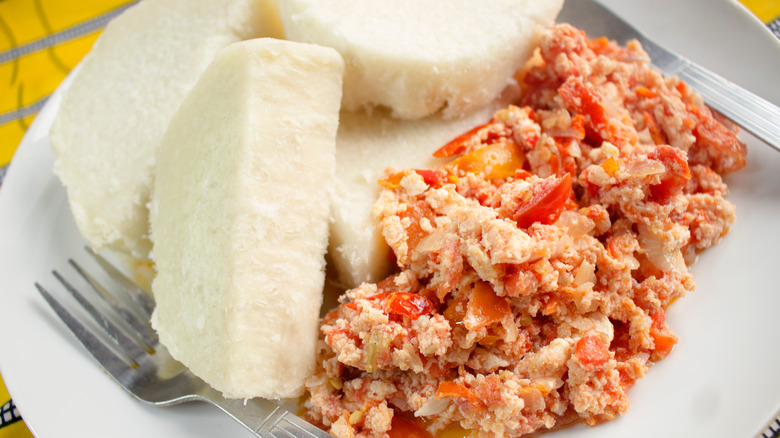

Yam and Fried Eggs

Description
Yam and Fried Egg sauce is a staple in many homes in West Africa.
It is commonly had for breakfast and is rich in carbs, protein with lots of vitamins.
This recipe makes about 3 servings of the meal.
Ingredients
- 1kg African yam..
- 5 eggs.
- 4 large tomatoes.
- 1 medium sized onion.
- Half cup cooking oil.
- 1 teaspoon each of salt and seasoning.
- 2 large bell or sweet peppers.
- Optional2 habanero, scotch bonnet (or some other hot pepper).
Steps
- Peel the yam and cut into small pieces.
- Wash the pieces in cold water.
- Put the pieces in a pot and add enough water to cover all pieces.
- Set your stove to medium high and let it boil.
- While the yam is boiling, chop the peppers and onion in a food processor.
- Add half a cup of oil to a pan and fry the pepper mix for about 3 minutes.
- Add about a teaspoon of salt, and a teaspoon of seasoning to the mix.
- In a seperate bowl, mix the eggs until smooth.
- Add the eggs to the pepper mix and turn down the heat to low.
- Mix the egss with the pepper and turn the heat to medium.
- Let it simmer for about 5 more minutes.
- Mix once more and let it cook for two more minutes. Then turn off the stove.
- If a fork passes through a yam piece cleanly, turn off the stove and gently drain the excess water.
- Serve once cool. Bon Apetit!
Return Home